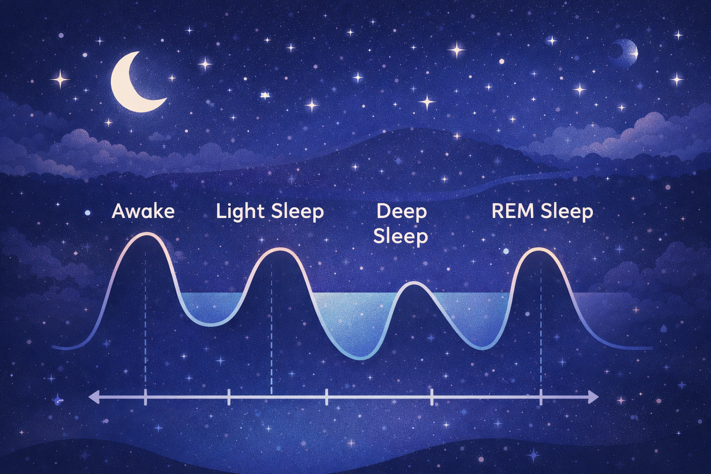

Sleep is not a single continuous state. Instead, it occurs in repeating cycles that happen throughout the night. Each sleep cycle typically lasts around ninety minutes and consists of several stages that vary in depth and brain activity.
Throughout the night, the body moves through these stages multiple times. A healthy night of sleep usually includes four to six complete sleep cycles.
The first stage of sleep is known as light sleep. During this stage, the body begins transitioning from wakefulness to sleep. Brain activity slows down, muscles relax, and heart rate begins to decrease.
People can be easily awakened during this stage, which is why it is considered the lightest stage of sleep.
The second stage of sleep is a deeper stage of light sleep. During this stage, the brain produces bursts of electrical activity known as sleep spindles.
These sleep spindles help protect sleep by blocking external disturbances such as noise, allowing the body to remain asleep for longer periods.
The third stage of sleep is known as deep sleep, also referred to as slow-wave sleep. This stage is extremely important for physical recovery and restoration.
During deep sleep, the body repairs tissues, strengthens the immune system, and releases growth hormones. This stage is often considered the most restorative part of sleep.
If individuals are awakened during deep sleep, they may feel disoriented or groggy.
The final stage of sleep is known as REM sleep, which stands for Rapid Eye Movement sleep. During REM sleep, the brain becomes highly active and most dreaming occurs.
REM sleep plays an important role in emotional processing, learning, and memory consolidation.
The quality of sleep depends not just on how long a person sleeps, but also on how well they progress through each stage of the sleep cycle.
Disruptions to these cycles, such as waking up frequently during the night, can reduce sleep quality and cause individuals to feel tired even after several hours of sleep.